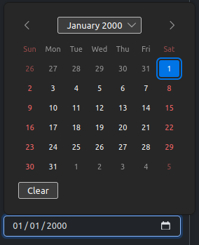
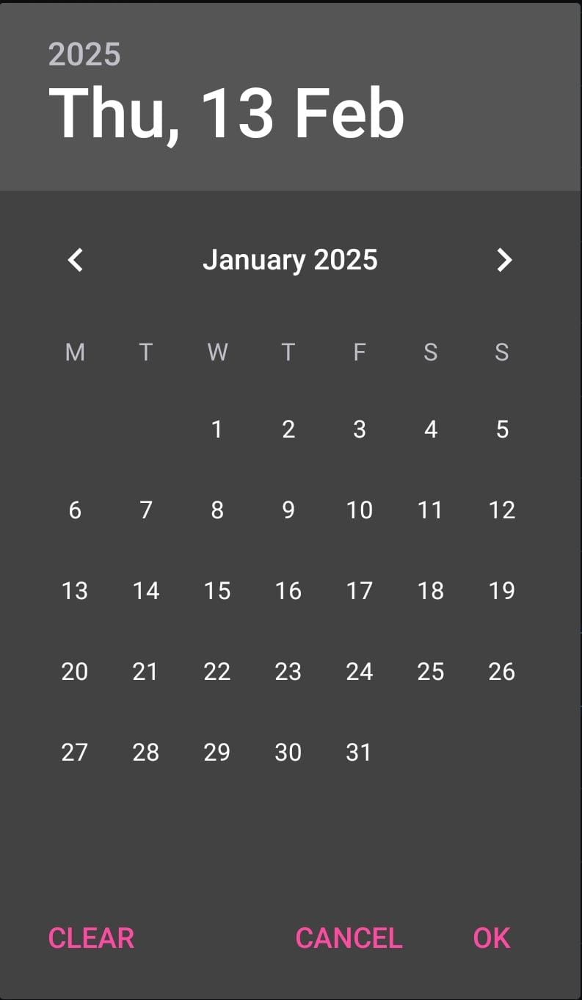
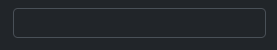

Neste cenário, Django tem pouco controle do que ocorre ali porque DateInput será um <input type="date"> e o navegador aplicará as regras dele.
No Firefox, por exemplo, isso será renderizado com um botão que permitirá o usuário selecionar uma data sem precisar digitar todos os campos.

O navegador decide como exibir o input e como a seleção de data ocorrerá (Firefox no desktop)
O locale do input também ficará a critério do navegador, então se ele foi configurado para português brasileiro, provavelmente o padrão será DD/MM/AAAA, mas, se for inglês americano, o padrão será MM/DD/AAAA.
Observação: como o navegador está ciente que o input é uma data, ele garante que o que for digitado será válido no locale do usuário, ou seja, não será permitido digitar, por exemplo, 50/02/2000. Além disso, se o usuário estiver usando um navegador no celular, o seletor nativo ajuda a pessoa a selecionar datas com mais facilidade do que digitar no teclado.

Como um input de data se comporta (Firefox no Android)
A segunda opção é colocar o controle do input para o Django:
Neste cenário, Django tem maior controle do input. No código acima, input_formats recebe uma lista de possíveis formas de se inserir a data.
Imagine um cenário em que, por algum motivo, se quer exibir o input sempre no padrão DD/MM/AAAA independente do locale do navegador do usuário, então a segunda opção permitirá adicionar essa funcionalidade. O formato poderia ser de outras formas, por exemplo: %m/%y para aceitar apenas mês e ano (com dois dígitos).

O navegador exibirá apenas como um input do tipo text
A desvantagem é que, como o navegador não sabe que aquilo é um date, ele não consegue fornecer uma ferramenta de seleção de data. Além disso, um placeholder e possivelmente máscara seriam úteis também para minimizar essa desvantagem.
type text é o valor padrão, então é opcional informar. Se quiser o tipo date, então é obrigatório informar.
Observação: o exemplo acima não garante que o usuário digite uma data inválida, por exemplo 90/60/0001, apenas aplicará uma máscara que impede caracteres diferentes de números de serem digitados.
Na validação do Django, isso será barrado, mas o usuário terá a liberdade de digitar o que quiser - isso não ocorre com a primeira opção porque o navegador sabe que não existe um mês 60, por exemplo.